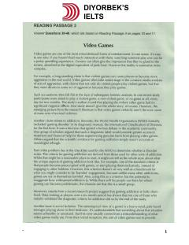

DIIELTS imtihoni uchun video o'yinlar mavzusidagi o'quv matni va test savollari.
Ushbu material IELTS imtihoniga tayyorgarlik ko'rayotganlar uchun mo'ljallangan o'quv matni va test savollarini o'z ichiga oladi. Matnda video o'yinlarning jamiyatga ta'siri, zo'ravonlik, qaramlik va ijtimoiy izolyatsiya kabi mavzular ilmiy nuqtai nazardan tahlil qilinadi.